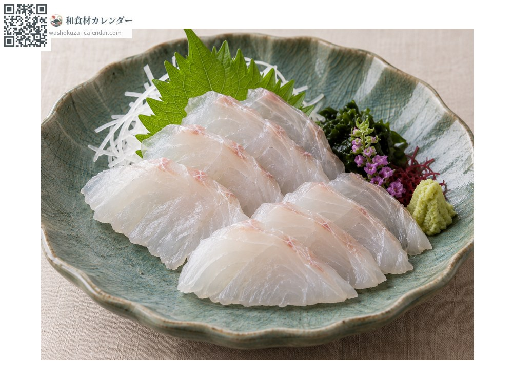
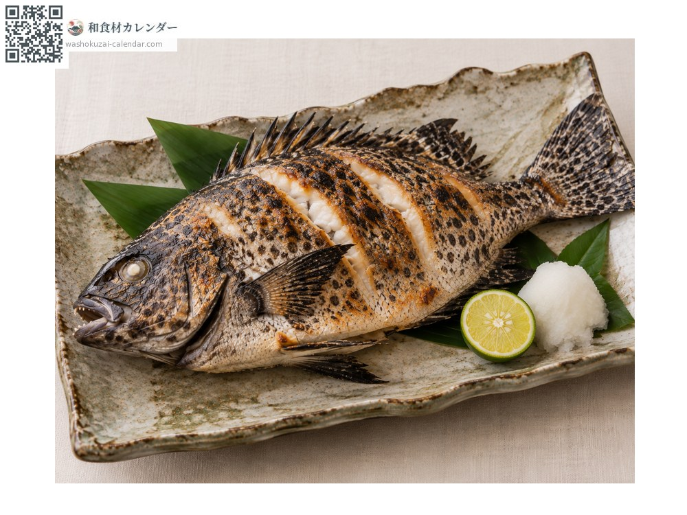
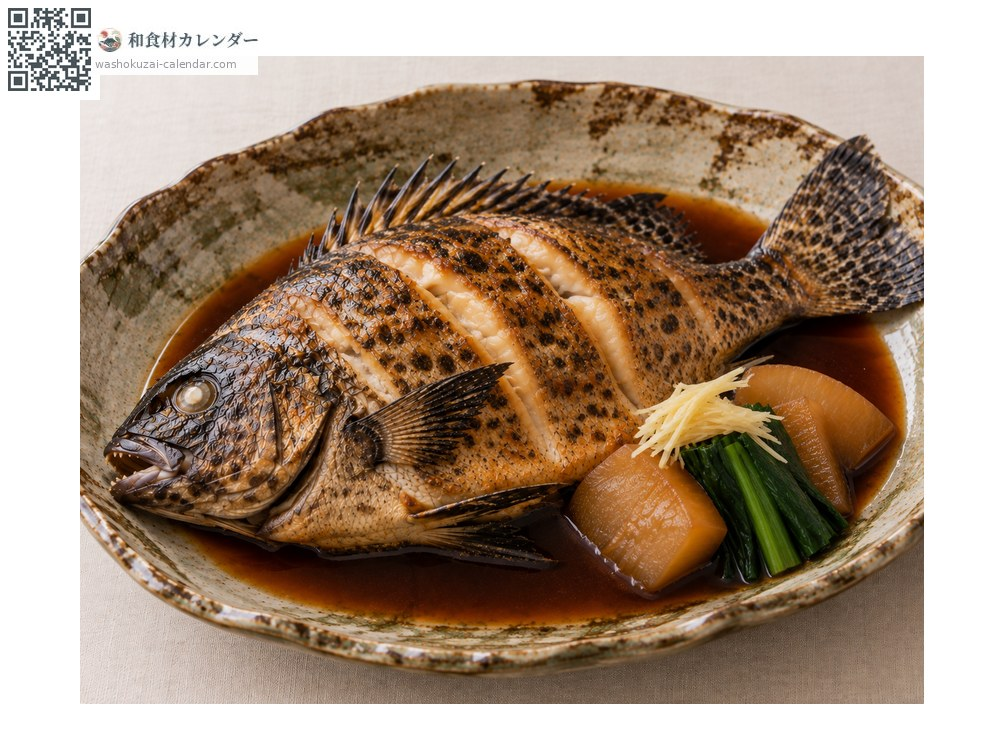
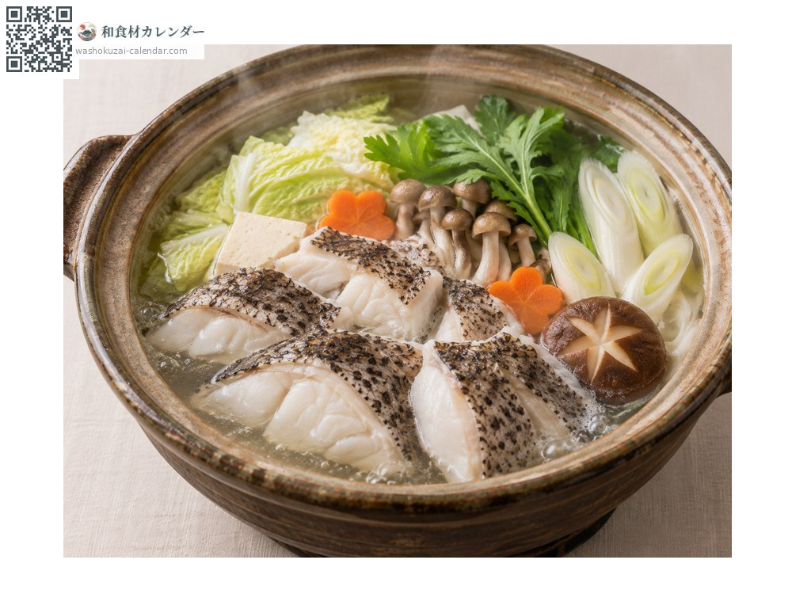

海鲜
斑石鲷
イシガキダイ いしがきだい ishigakidai
别名ishigakidai
应季时期为6月、7月、8月

应季时期
1月
2月
3月
4月
5月
6月
7月
8月
9月
10月
11月
12月
应季有供应
烹饪方法

生鱼片
比条石鲷的肉质更紧实，适合切成薄切。

盐烤
鱼皮那面烤得焦香。鱼肉扎实不易散。

甜酱油炖煮
甜咸炖煮，富含胶质的鱼皮会变得滑顺。

火锅
骨头能熬出浓郁的汤头，鱼肉不容易煮散。
挑选方法
石墙般的斑点清楚、鱼身厚实紧绷。
保存方法
肉质紧实所以耐放。取出内脏后冷藏，两到三天内用完。
主要产地
小知识
全身的黑色斑点看起来像石墙，因而得名。与条石鲷是近亲，杂交个体称为「金鲷」。年老的公鱼嘴部转白，称为「白嘴」，是钓客梦寐以求的鱼。